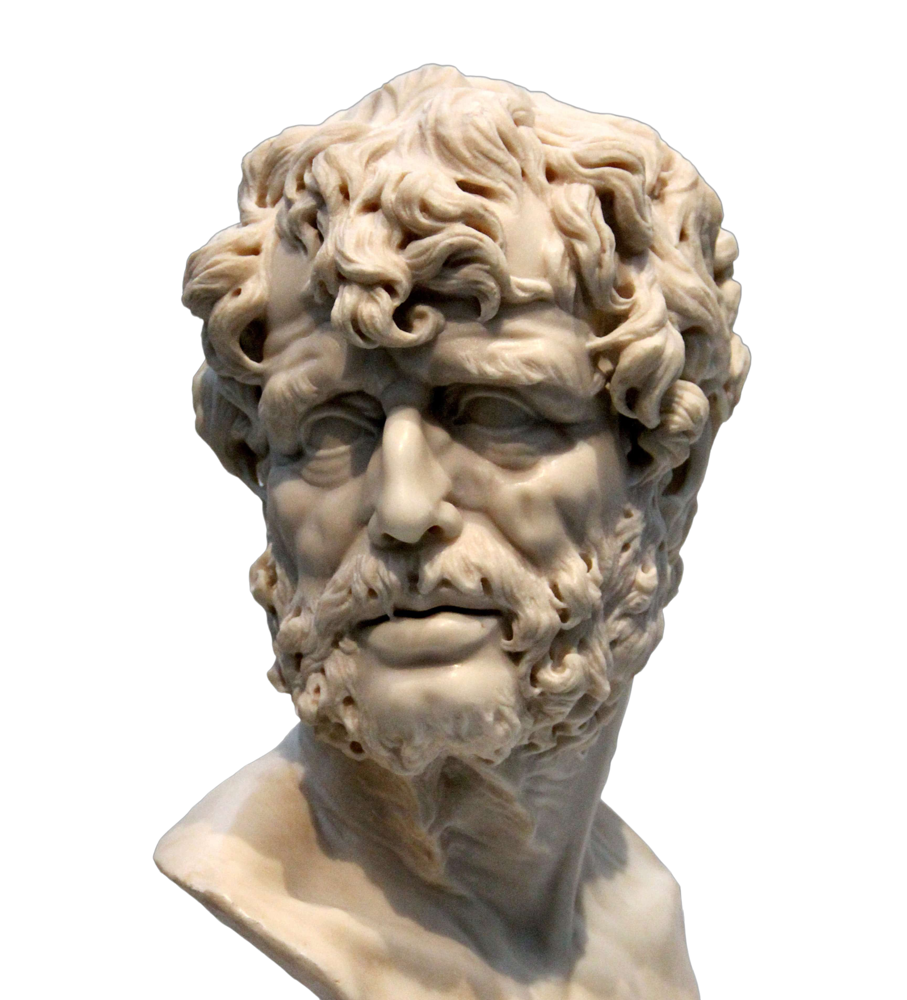

Escolha seu estoico favorito
Epicteto foi um filósofo estoico nascido em Hierápolis, 50 d.C., De sua obra se conservam o Encheiridion de Epicteto (também conhecido como Manual de Epicteto) e as Diatribes (ou Discursos). Seu nome vem do grego, “epiktetos”, que quer dizer “adquirido” ou “comprado”. Seu nome de nascimento é, infelizmente, desconhecido…

Marco Aurélio foi o imperador regente de Roma durante uma época marcada por guerras e conflitos além da peste antonina que matou milhões, mesmo cometendo erros durante seu reinado Marco Aurélio era um exemplo de humildade e bondade além de pregar igualdade ao povo e se afastar dos luxos da vida focando mais em seu trabalho e servir a população romana
